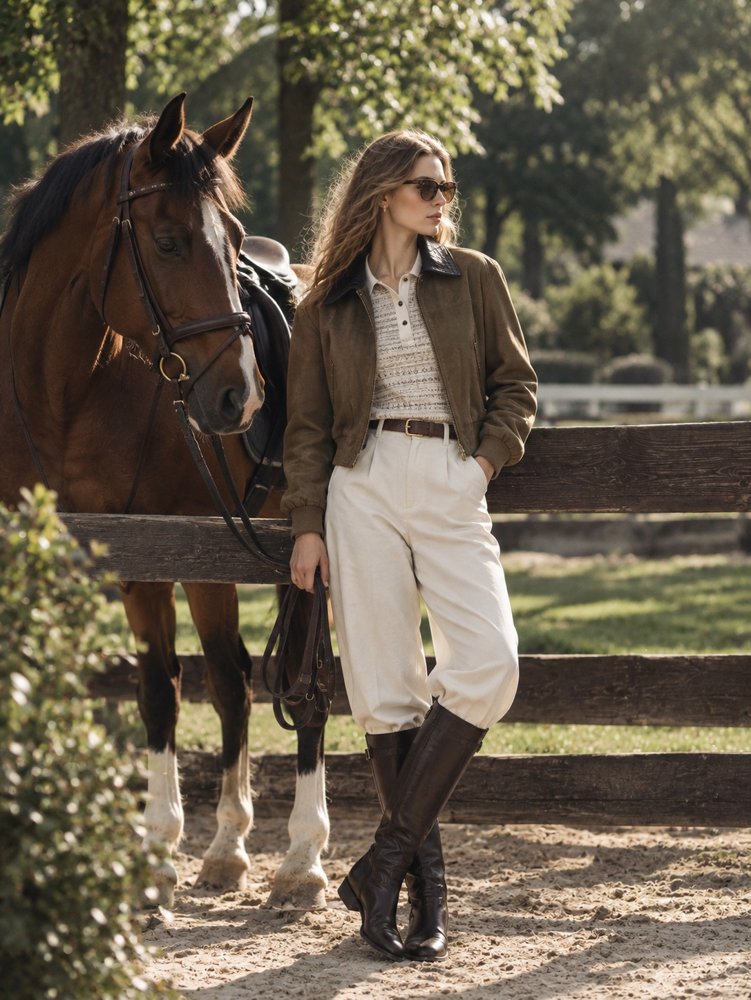

FUYU · 个人作品展示
一组以经典学院风与老钱风为底的秋冬造型：费尔岛针织、菱格开衫、麂皮夹克与白色阔腿裤反复组合， 从影棚白底走到雪山、马场、湖畔与城市街头。下面收录 31 张原图，另有 PLO·CART 2026AW 秋季陈列指引整本 36 页，页尾还有 7 张沿用同系列单品延展的衍生创作。

先按大片与棚拍分开，大片再按城市、户外、小香风、美式复古、情侣双人等系列分。点任意一张图可以放大查看，放大后可用左右按钮或键盘方向键翻看。
这个系列暂时没有图片。
作品按模块排布：一个作品一张封面卡，点任意一个模块进入完整作品页，可翻页、滑动浏览全部内容。目前收录 PLO·CART 2026AW 秋季陈列指引整本 36 页。
沿用原图集的模特气质与核心单品——白色阔腿裤、针织、驼色大衣与深棕皮具——把造型延展到三个原图里没有的场景：秋日林荫道、海港小镇与雪夜木屋村。